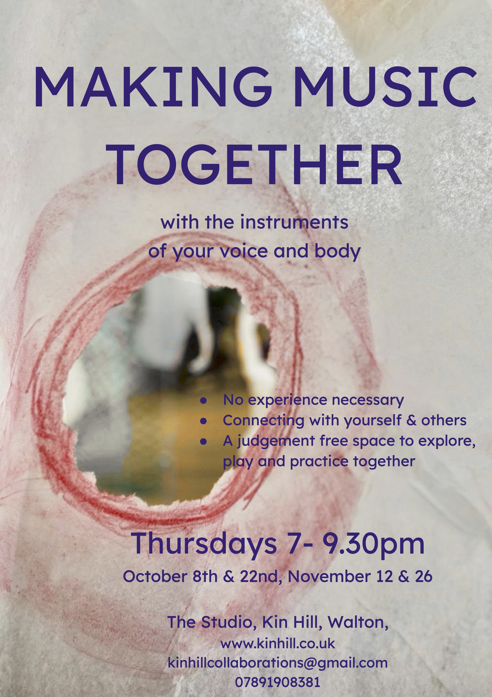

Making Music Together
In August I spent a week in Germany with Music do Circulo, an amazing Brazilian trio who lead a group of all musical levels to create the music of the moment together.
It has inspired me to swim in the waters of uncertainty that making stuff up in the moment requires of us. Of course in ‘real life’ we are doing this all the time but musically it always seems to me to be rather more intimidating.
I would love it if you would join me to be part of a group that explores this together, a singing group that has a different flavour, delicious but distinct from my previous experience of leading known and knowable songs (though it might occasionally include that too).
I will be offering the foundations of rhythm, body percussion and very simple circle songs. These will be supported by body practices and 1:1 check-ins aimed to soothe our nervous systems.
If you want to connect through making music with others, to sing, to tap your body and move please come and have a go. It is so much fun, enriching and uplifting to leap into these waters together and find that we can float, play, splash about and make beautiful waves together.
There will be no payment required to attend while I see whether this is something that works however any donations towards the running costs of the studio are always most welcome.
BOOKING REQUIRED: Please note that after the first session Oct 8th this will become a closed group. New participants will only be able to join at the beginning of each term (eg January 14th, if there is the thirst to continue). I hope that by doing the sessions this way the group will cumulatively build a foundation of familiarity, trust and progression.
Please email for further info or message Lulu on 07891 908381
More information about Music do Circulo here: www.musicadocirculo.com/en
